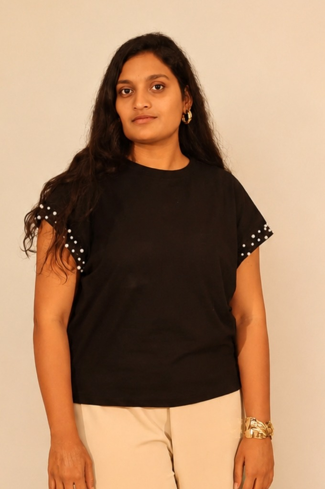

An orange and warm cream design system specification outlining the interactive Left-to-Right Page Slider layout, content nodes, and tech stack details.
As requested, implementation of the final codebase has not started yet. Use this interactive document to preview the slide mechanism, explore the card styles, and verify content layouts before full-scale coding begins.
Mapping the single-page horizontal card deck structure
Rather than traditional separate pages, the site uses a hardware-accelerated wrapper container layout with overflow-hidden on the root window.
Each panel takes up exactly 100vw (100% of the viewport width). Inside the navigation controller, clicking a menu link or swiping translates the container horizontally along the X-axis:
To ensure optimal UX on touch devices, swipe detection is registered via Javascript. Left-to-right page movements are triggered dynamically by tracking:
touchstart: Record initial horizontal coordinates.touchend: Calculate swipe direction and force offset thresholds.Click tabs or swipe indicators to preview pages sliding left-to-right
Motivated and detail-oriented student passionate about creating premium, responsive frontend user interfaces. Skilled in tailoring clean code workflows with orange-accented modern aesthetics.

ACE Engineering College • 2024 - 2028
Coursework: Data Structures, Web Development, UI/UX
Sri Chaitanya Junior College • CGPA: 8.7/10
A platform linking surplus food donors with local NGOs to drastically reduce neighborhood food waste. Built with dynamic responsive frontend layouts.
📂 View Repository Code ↗Built customized high-performance components for a community communication networking prototype. Ensured strict responsive grid alignment.
📂 View Repository Code ↗Generative AI Landscape
Young Professional
AI Tools Certificate
500 Difficulty Rating Certificate
Automated pipelines will connect the Git repository with Vercel to allow instant preview updates whenever code edits are committed on GitHub.
#f97316 (Tailwind orange-500)
#fffaf4 (Primary Background)
#1c1917 (Tailwind stone-900)
bg-orange-50/50 blur mix
Specifying glassmorphism container aesthetics requested by user
Hover over this card to view the responsive shadow transition. It has a custom rounded frame, translucent orange borders, and an off-white drop shadow.